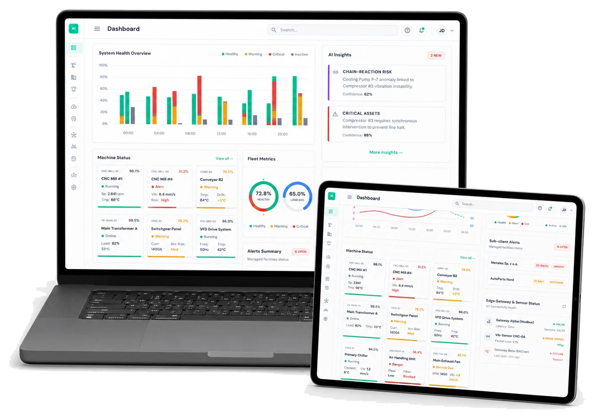

01 / EMBEDDED SYSTEMS & AVIONICS
Real-Time Hardware-Software Integration
Developing embedded software and integrating flight controllers, sensors, communication modules, motors, and actuators for UAV and autonomous-system prototypes.
SKILLS / ENGINEERING CAPABILITY MATRIX
The engineering capabilities I use to build autonomous and intelligent systems-from embedded firmware, sensing, and flight-control integration to machine-learning inference, industrial IoT, cloud services, and system validation.

01 / EMBEDDED SYSTEMS & AVIONICS
Developing embedded software and integrating flight controllers, sensors, communication modules, motors, and actuators for UAV and autonomous-system prototypes.
02 / MACHINE LEARNING & ENGINEERING DATA
Building Python-based ML pipelines that transform sensor and operational data into failure predictions, condition assessments, automated reports, and engineering decisions.
03 / INDUSTRIAL IoT & CLOUD SYSTEMS
Connecting sensors, industrial machines, edge devices, APIs, databases, and dashboards to create reliable data pipelines and operational monitoring systems.
04 / ROBOTICS, SIMULATION & VALIDATION
Defining system architecture, testing integrated hardware and software, simulating engineering behavior, and documenting technical decisions throughout the development lifecycle.
SELECTED APPLICATION AREAS
Embedded avionics, flight-control integration, real-time sensing, actuator control, communication resilience, and validation under degraded-link conditions.
Machine-learning inference, Remaining Useful Life prediction, multi-protocol sensor ingestion, automated equipment inspections, and engineering report generation through Skoldern.
Multispectral satellite-image processing, vegetation-index calculation, spectral feature extraction, land-condition assessment, and ML-assisted agricultural analysis through agricAI.
Reusable pipelines for data ingestion, cleaning, validation, analysis, visualization, API orchestration, and automated technical reporting.